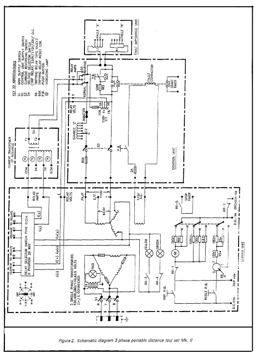

|
Protection |
Technical Procedure |
Quadramho
ALSTHOM
Using Test Set ZFB
|
|
|
|||
| Equipment Quadramho ALSTHOM |
Document
No: DsR-008-r0
|
|||
| Issued to: Networks | ||||
| Status: APPROVED | ||||
| Procedure: Using Test Set ZFB |
Approved Date : 22 May 2002 | |||
| Date to be Reviewed: May 2007 | ||||
Introduction
The relay type quadromho-has been designed to satisfy the demand for a cost off entire distance relay for medium and high voltage TL's and distribution lines. Three zones of protection are incorporated each having separate measuring elements for each type of phase and ground fault. For short line application involving strong sources power in feed quadrilateral ground fault Ch Z for all three 3 ones can be specified, ensuring a adequate tolerance to arcing and tower forting resistance
The first draft initiated by eng Mohamed Helmy El_Qady from west delta, tested at Nov. 2001 at El Bostan 220kv substation, by eng. M. Helmy El_Qady and eng. Ahmed Maky.
Safety Precautions
A work permit must be issued and the qualified maintenance staff should carry the suitable safety category,
Safety fence (rope) with caution marks surrounding the work area,
Switch off dc power supply before inserting or with drawing any lard from the relay.
Make sure that ct secondary arints are shorted before isolating the relay arints for test current injection.
Before removing a module ensure that you are at the same electrostatic potential as the equip mint by taunting the case.
Tools and Equipment
ZFB test set (consists of 4 units: supply unit, control unit, fault impedance unit, and CT unit,
Timer,
Test plug LZ & 1Y,
Multmeters,
Leads.
Work to be Carried Out
Step to Prepare for Relay Testing
This procedure is used to perform off laud relay test
Review technical reference material (manufacture’s manual )
Obtain a copy of relay setting from field maintenance file.
Checks that the bus and line disconnect switches are opened.
Inspect the CT secondary circuits, the VT: MCB and all cabling supplying the relay.
Check there is no AC current from CT’S by using clip on ammeter.
Check that there is no AC voltage from VT’s by using a voltmeter.
Isolate the disturbance alarms and fault recorder, auto reclose associated with the relay.
Preparation
Connect the ZFB test set as shown in fig 1
Connect test plug, 1Z, 1Y as shown in fig 2
Ensure that the CT secondary is correctly short-circuited on the case side test plug IY, their connections must be made before the test plug is inserted.
Connect the current terminals, voltage terminals on the test plug to the corresponding current, voltage terminals on the supply unit test set.
Set the main on off switch si on the supply unit to off position
Connect the source (380 VAC) to the ZFB test set.
Testing the relay
Phase to Phase Measuring Elements
Calculate the valve for phase-to phase impedance corresponding to zone-1 setting Zph-ph=2z
Commence with connections for A-B fault.
Select a valve of fault impedance close to Z ph-ph from the table, which should have:
Phase angle as measure possible to the relay chs angle.
Fault impedance just above the calculated valve.
Note the corresponding x (choke top) and R (res.-tap) from the table.
On the fault impedance test set unit, connect the resistance and reactance taps, which correspond to the fault impedance.
Select the source impedance required by connecting the flexible link from the terminal marked common to the appropriate ohm top of the source impedance.
If it is required to test the relay under max voltage conditions, the source impedance should be short-circuited by linking the common to the o terminal.
Divided the fault impedance selected by the calculated valve % potential = fault impedance selected/calculated valve
Set the % potential switches s5 and s6 on the control unite to 100%
Set the current reverse switch s3 on the control unit to the normal position
Connect the outgoing voltage lead from the supply unit to the terminal Ph/F
Switch on switch s1 on the supply unit.
Start the test by pressing the “FAULT” push-bottom on the control unit momentarily.
Observe that the red indications A, B on the relay will light up.
Change the valve % potential top up or down until the relay operates in second step (the indication z2 on the relay will light up with A, B)
Record this pickup point on test sheet.
Repeat the above test for phases B-C and C-A
Repeat the above test from 1 to 16, but now, calculate potential corresponding to the relay setting of the second 3 one for Ph-Ph fault set this valve on the test set and then change it up or down until the relay operates third step then red indication z3 on the relay will light up with z2, A and B./and repeat this test for B-C and C-A phases.
Record this pick up point on test sheet
Switch off switch s1 on the supply unit.
Testing the Phase to Ground Measuring Elements
Calculate from line impedance Z, the checking valve for phase to ground impedance corresponding to Zone-1setting.
Zph-ground = (1+kn) = 1.7 Zr.
Calculate % potential-which will set on switches s5 and s6 on control unit test set-by the same method as from step 7-1-4 to 7-1-7 but for ph-n
Select ph-cr fault A-N by using the relay selector switch on supply unit test set.
Connect the outgoing voltage from the supply unit to the terminal marked E/F
Switch on the switch s1.
Start the test by pressing the “FAULT” push-bottom on the control unit momentarily.
Observe that the red indication “A” on the relay will light up.
Change the valve % potential top up on down until the relay operates in seconds step. (red indication z2 will light up with led A)
Record this pick up points on test sheet.
Repeat the above test for phases B-N and C-N
Repeat the above test from 1 to 9 but calculate % potential corresponding to the relay setting of the second 3one for Ph-N fault, set this valve on the test set and them change it up on down till the relay operates in third step.
Record this valves in the test sheet
Switch off switch s1
Directional Test
Set the source impedance to 6r and the fault impedance to zero.
Set the % potential switches s5 and s6 to zero.
Select a fault cond n using the fault selector switch.
Switch on the switch s1.
Start the test by pressing the “FAULT’ push-bottom on the control unit and hold down checking that the faulty phase operates in 3one 1, 2, 3 release the “FAULT’ push-bottom.
Repeat steps 5 and 6 for all phases of the prat n
Set the current revaluing switch 53 on the control unit to the reverse position.
Repeat steps 5, 6 and 7. Keep the fault push-bottom depressed for a little longer than 3 one line operation should not occur in 3 one 1 and 2, but con occur in 3one 3 only if the relay has reverse reach.
Switch off the switch s1 and return s3 to normal position.
Measuring the Operating Times
Set % potential switches s5 and s6 to 50% of the zone 1 reach.
Select phase to phase fault (A-B) for example by using relay selector switch on supply unit test set.
Connect the outgoing voltage from the supply unit to the terminal ph/F.
Connect a timer having the start contact operated by the start timer contact on the ZFB control unit.
Connect test leads bet contact N (7,8) on the left-hand side of the 1z test plug.
Reset the interval timer.
Switch on the switch s1.
Start the test by pressing the “FAULT’ the timer will step once the relay has picked up.
Record zone one tripping time on test sheet.
Typical times expected are: Shaped m-ho-ch ---- 25-30 ms Quadrilateral ch ----20-35 ms
Repeat the above test from step1to9to measure zone two tipping time set % potentially mid way bet zone1and zone 2
Repeat the above test from 1 to 9 to measure some three tripping time, but this time set % potential s5 and s6 to a valve approximately midway bet zone 2 and zone3.
Repeat tests for ph-to-cr operating times.
Repeat the above test from step 1 to 9-1 to measure times of three zones but for ph-cr.
Switch off the switch s1
Synchronous Polarizing Check
Connect test plug 1z
Set the source impedance to z4 cr.
Select the fault impedance to zone.
Connect a time interval meter, selected to the dwell made.
Having the start circuit connected to trip contact on prat.
Switch on the switch s1.
Select C-N fault with fault selector switch after removing the A and B voltage i/p and connecting test plug 1z terminals 1, 2 and 3 together.
Operate the “FAULT” push bottom, note the time on the interval mater
The time measured should be 180-220ms on 50H3.
Switch off the switch s1.
Switch on to Fault “SOTF’
Switch on to Fault (SOTF) With Level Detector
Connect the ZFB as shown in fig1
Connect test plug 1z x 1y as shown in fig 2.
Put sw1 to the right.
Set the source impedance to 12 on 24 cr.
Set % potential s5 and s6 to 100%.
Select on a-n condition on ZFB.
Connect voltammeter o ---1s ov a.c to the voltmeter terminals on the ZFB control unit.
Ensure that ZFB is switched off.
Hold down the “FAULT” push bottom and then switch on the ZFB.
If no SOTF operation occurs, switch off s1, reduce the voltage in 1 % steps and repeat step 9 till operation occurs.
Record the voltage.
Switch off the ZFB.
Voltage for operation is 44-45v ≠10%.
Repeat steps 11-1-9 to 11-1-11 for other ph-N fault conditions.
Switch on to Fault (Using Zone Comparators)
Connect the ZFB as shown in fig 2
Connect test plug IZ & 1Y as shown in fig 2a, 2b
Put switch sw1 to the left.
Set source impedance to 12 or 24 ohm
Set % potential s5 and s6 to 100%
Select an A-N condition on ZFB.
Connect a voltmeter 0—150 Va.c to voltmeter terminals on the ZFB control unit
Ensure that ZFB is snitched off
Now, a trip is caused by the operation of any 3one 1, 2 or zone 3 comparator, It should be noted that no phase indication is given, only the SOTF led will illuminate.
Hold down the ”FAULT “ push bottom and the switch on the ZFB.
Soft operation should occur and SOTF LED illuminate.
Switch off the ZFB
Repeat for other Ph-N fault conditions
Low Set Current Level Detector
Keep test option 43 selected.
Inject current into each pair of phase terminals on the left hand side of the 1Y test black.
Determine the pickup as indicated below the drop-off should be within 10 % of the actual pick–up.
|
Level Detector |
Terminals injected |
LED Marking |
|
|
A phase |
1Y |
1-2 |
Z3 |
|
B phase |
1Y |
3-4 |
aided trip |
|
C phase |
1Y |
5-6 |
SOTF |
High Set Current Level Detector
Select test option 53.
Inject current as the previous test.
Determine the pick up,drop off-(10 % of the actual p.N)
Auto Ranging Low-Set and High Set
Residual Current Level Detectors
Low set
This is used to enable ground fault trips presenting operation for heavy close-up phase to phase faults
Also used in the voltage transformer supervision feature to detect the presence of Zero sequence current
Min operate level =
Select option 43.
Inject current into each phase in turn.as in 12
Min operate level as indicated by the led marked-vn Fail, drop off should be within 10 % of the actual pick up.
High Set
It is used to black phase fault comparators, which may.
Cause 3-ph trip during heavy close –up single phase-ground faults, also it acts with voltage level detectors to permits phase-faults comparators to opercite for two phase-ground faults.
Select test option 53
Inject current as for the low set
Check that ‘ VN Fail ‘ operate
Min operate level =
Voltage Transformer Supervision
Operation occurs when zero sequence voltage above a set level is detected without any zero sequence current being detected above a set level.
If set for indication only instantaneous indication will be given if operation conditions are satisfied and a comparator is operated otherwise time delayed indication will be given.
If set for blacking this can take place instantaneously If a comparator operates.
Operation on Zero Sequence Voltage
Apply balanced 3-phase-Network volts.
Reduce the voltage on one phase until VNFAIL indication is abstained.
Before doing this test the current o/p to the relay for the selected ph –tv-N fault should be.
Shorted (on ZFB test set) to enable volts to be pad to the relay.
The Zero Sequence Voltage Setting Is (28.6 + 2%) V Timing Check
Before start apply the step 3
Using a double pole switch to rename one healthy voltage and start a timer which stopped by the alarm contacts (c17- 18)
The time obtained is (5.5 + 0.1) sec
Current Checks
Do same steps as from 1 to 4 .
Now, inject a current above this low- seneutral level into one phase, while one phase-neutral voltage is below 30 v and cheek that the Vn fail indication cam be reset.
It is recommended that the variac and resistor used for supplying the current when a ZFB is used to supply the volts.
Check that when “VN FAIL " is indicated that moving sw3 to the right causes the relay railabel LED to go on.
Instantaneous Indication or Blocking Check
Connect the relay as if A phase-to-N fault were to be applied.
Instead of returning the current through the Neutral take it in the reverse direction through B-Phase (the current path is into 1Y1 out of 1Y2 Link to 1Y4 out of 1Y3, all being the relay side terminals of the lower test black .
The result of this fault application will not produce any residual current.
Choose the source and fault impedance such that when the fault is applied the A-N volts will fall below 25V causing zero sequence voltage level detector to pickup.
To ensure of getting a Zone 1
Comparator operating (A-B) set k11 to oo.
Ensure that SW3 should still to the left.
Apply the fault and instantaneous indication will be obtained for An (A-B) fault, and Vn FAIL.
Set sw3 to the right and Apply the fault until time delayed Vn FAIL indication only is obtained (5.5 sec).
Set sw3 in the required position and return k11 to the correct setting.
N.B When as is selected the comparator self-check may cause the relay available LED to go off.
Miniature CB Black Check
Energize the ap to coupler connected to case terminal A, and A2, then me should have (1) the rts indication operates and latches (2) the 97ХX-1 contact on case terminal e(17) c18 closes the relay available green led extinguishes.
The relay in operation alarm 97Y-1 on case terminals c21 and c22 opens.
With the up to coupler still energized apply a zone 1 ground fault, a zone 2 phase fault and a zone 3 reverse (if offset) earth fault. No operation should occur.
De- energise the MCB up to-coupler, and normal operation will occur but note the vts light requires resetting.
Power Swing Blacking Checks
If this feature is to be used it can now be enabled by moving switch sw9 to the right.
The feature works from comparator on A-B and utilizes a zone 6 in conjunction with zone 3
Zone 6 is Automatically set with the 3 one 3 Swatches to give:
Z6 (F)= zone (F) +0.3 x zone 3 (f)
Z6 (R)= zone (R) +0.3 ozone 3 (f)
Power swing is detected by an impedance being seem bet Z3 & Z6 for a time exceeding 50 ms and then being seen inside Zone 3.
Check Zone 6 Boundaries
Plug the 25 way monitor paint box into sacket on module 6. (see Fig 3).
Connect a high impedance Dc voltmeter from monitor paint 2 (-) to 7 (+) (when an impedoce is seen inside zone 6 the voltage will drop from 24v to zero)
The boundary may be determined either by momentarily applying the “ fault” or by gradually decreasing the impedance until the Voltmeter reading fails. (For the reverse reach an additional tolerance of I 15 % is allowed).
50 ms Timer Check
The voltage out of the monitor point box has been chosen so that the GEC Measurements digital timer will treat it as a contact, the voltage present being treated as on open contact.
Apply a fault approximately mid-way bet- 3one 3 and zone6.
Start the timer when it is applied fault bet Z3QZ6 and stop it when the voltage on the monitor point box terminals 2-7 falls (on the GECM timer terminal must be connected to the common on the timer and the timer set for norm ally open to start the stop) .
Take fine timings and find the average and subtract x ms which should gives 50 ms (10ms) where xz 25 ms for quad /mho version zx 30 ms for mho ventricular version.
Return Relay to Service
Withdraw the test plug handle from the relay.
If any equipment associated with the relay has been isolated without the test plug it should be returned to service.
Request Power Line to Be Returned to Service
Take crossed readings of all AC currents and voltages supplied to the relay and compare them to those for normal load condition.
Chick that readings agree with station meters (MW / MVAC / PF / Amperes / Voltages)
Place a copy of the test measurement in the field maintenance file.
|
Level Detector |
Terminals Injected |
LED Indication |
Pick Up Volts |
Drop Off Voles |
Drop offPick up |
|
A phase B phase C phase |
1Z 1-4 1Z 2-4 1Z 3-4 |
A B C |
|
|
|
If actual measurements are not taken just put ticks to show that pick up has occurred at 49 volts and not at 40 vols.
Phase Current Level Detector Checks
Low sets (Test Option 43)
Pick-up - (5/100) ×( 4.8/k1+k2) × In Amps ( ± 10%)
k1 + k2 = . . . . . In = . . . . . . amp Nominal pick-up = . . . . . .
|
Level Detector |
Terminals Injected |
LED Indication |
PICK current |
Drop off current |
Drop off % pick up |
|
A Phase B Phase C Phase |
1Y 1-2 1Y 3-4 1Y 5-6 |
Z3 AIDED TRIP SOTF |
|
|
|
High – Sets (Test Option 53)
Pick up = (12.1/100) × (4.8/k1+k2) × In amps (±10 %) = . . . . . . .Amps
|
Level Detector |
Terminals Injected |
LED Indication |
PICK current |
Drop off current |
Drop off
% |
|
A Phase B Phase C Phase |
1Y 1-2 1Y 3-4 1Y 5-6 |
Z3 AIDED TRIP SOTF |
Residual Current Level Detector Chector Checks
(a) LOW – Set (Test Option 43 LED Indication V~FAIL)
Minimum operate level = (2/100) × (4.8/k1+k2) × In amps (± 20 %) =. . . . . . amp
Measured value injecting into A phase (1Y 1-2) = . . . . . . . mA
Measured value injecting into B phase (1Y 3-4) = . . . . . . . mA
Measured value injecting into C phase (1Y 5-6) = . . . . . . . mA
(b) High Set (Test Option 53 LED indication V~ FAIL)
Minimum operate level = (16/100) × (4.8/k1+k2) × In amps (± 20 %) =. . . . . . amps
Measured value injecting into A phase (1y 1-2) = . . . . . . . mA
Measured value injecting into B phase (1y 3-4) = . . . . . . . mA
Measured value injecting into C phase (1y 5-6) = . . . . . . . Ma
Directional Check and Reach Measurements
The table provided on a page 54 should be filled in for the results. Allowed tolerance ± 10%.
Directional checks with a close up fault.
Directional checks with a close up fault
|
A - N |
|
B - N |
|
C - N |
|
|
A - B |
|
B - C |
|
C - A |
|
The table on page 55 is provided for contact operation checks.
Operation Times
|
Source Impedance (ZS) ohms |
Phase |
Zone 1 (m/ sec) |
Zone 2 (Sec) |
Zone 3 (Sec) |
|
50% of reach (approx.) |
||||
|
A - B |
||||
|
A - C |
||||
|
C - A |
||||
|
A - G |
||||
|
B - G |
||||
|
C - G |
Power Swing Blocking Feature (If Used)
(a) Zone 6 Boundary (Inject A-B)
Forward 1oop impedance required = 1.3 x forward zone 3 1oop impedance = ohms
Measured 1oop impedance = ohmsReverse loop impedance required
= Zone 3 reverse loop impedance + 0.3 x forward zone 3 loop impedance = ohms
Measured loop impedance = ohms
An additional tolerance of ± 15% is allowed for the reverse reach.
(b) 50ms timer check
Measured time = ms (tolerance ± 5 ms)
(c) Blocking and contact check
|
Block works on zone 1 |
|
Tick boxes If function Is correct |
|
Zone 2 |
|
|
|
Zone 3 |
|
|
|
Alarm contact operation |
|
|
|
Optical isolator inhibit input |
Location:
Equipment code:
Checked by:
Date:
Signature:
